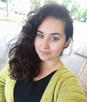

Name
Bashiri
Vorname
Sodaba
Adresse
Telefon
077 957 44 13
E-Mail
sodaba.bashiri@powercoders.org
Github account
https://github.com/Sod0o
Nationalität
Afghanistan
Geburtsdatum
25.01.2000
Zivilstand
ledig
In der Schweiz
seit November 2015
Bewilligung
F
2017 – 2018
Kinderbetreuung
Seit August 2018
Teilnehmer des Beschäftigungs- und Schulprogramms UMA
“Leben und Lernen” vom Netzwerk Asyl Aargau.
Schwerpunkt: Deutsch und Mathematik, sowie alltags-
kompetente Fächer
2008 - 2012
Mittelschule, 4. – 8. Klasse, Kabul, Afghanistan
2005 - 2007
Primarschule, 1.- 3. Klasse, Peshawar, Pakistan
2004
Kindergarten, Peshawar, Pakistan
Deutsch
mündlich und Verständnis: sehr gut, B1
schriftlich: sehr gut, B1
Dari
Muttersprache
Englisch
Fliessend in Wort und Schrift
Urdu
Gute Mündliche Kenntnisse
Mitwirkung beim Theater Generationenclub des Theater
Tuchlaube in Aarau, wöchentliche Proben, singen
IT Kenntnisse , MS Word
Gabi Gratwohl, Schulleitung
Schule “Leben und Lernen”
Tellistrasse 116
5000 Aarau
079 320 87 78